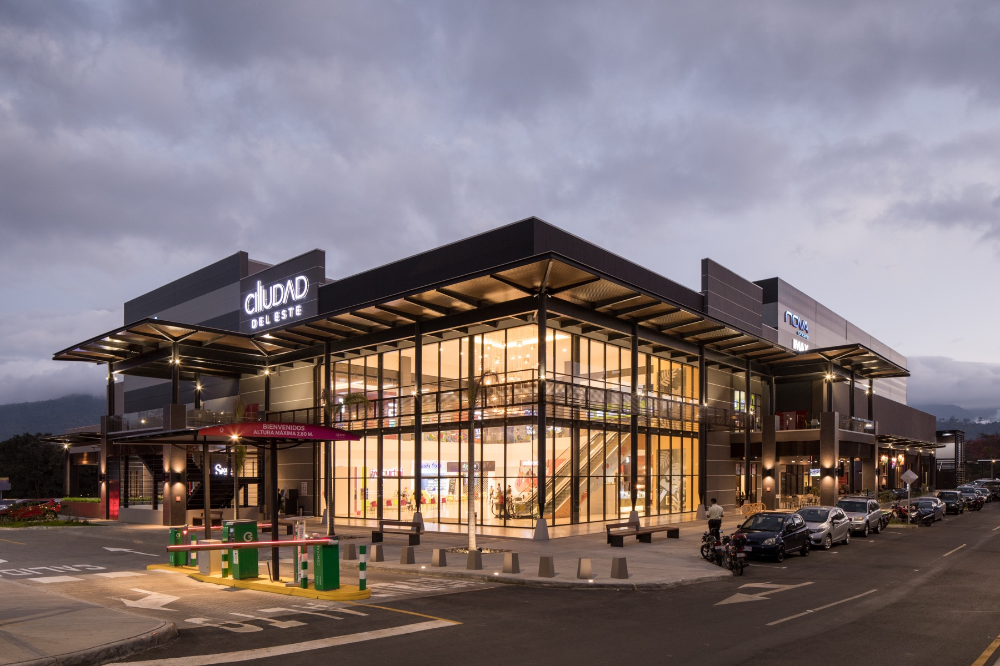
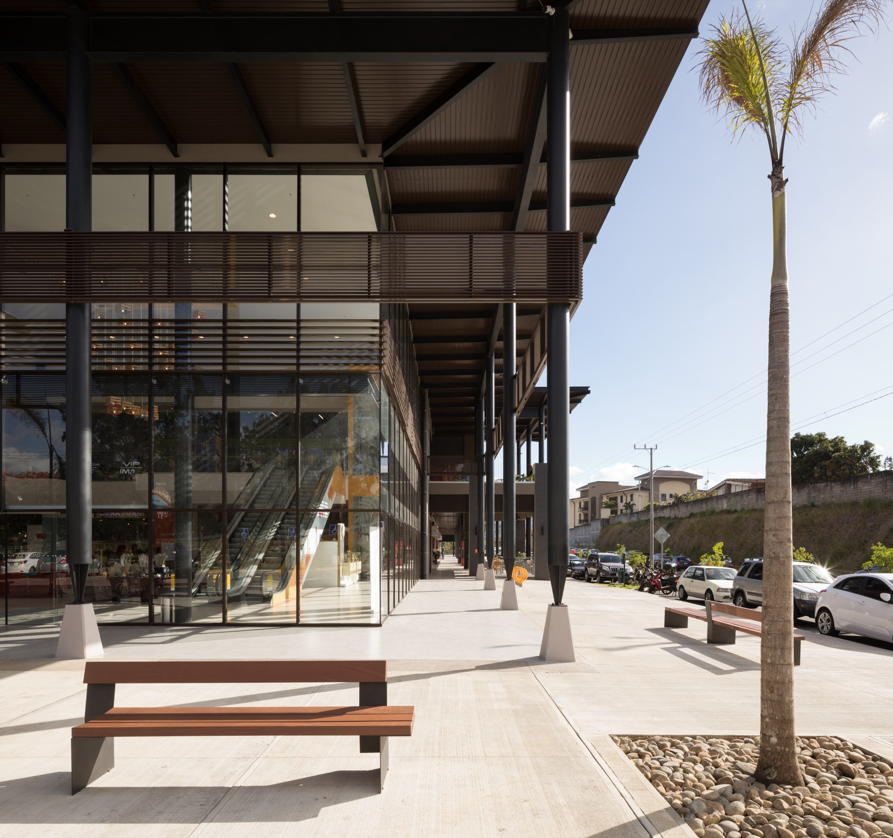
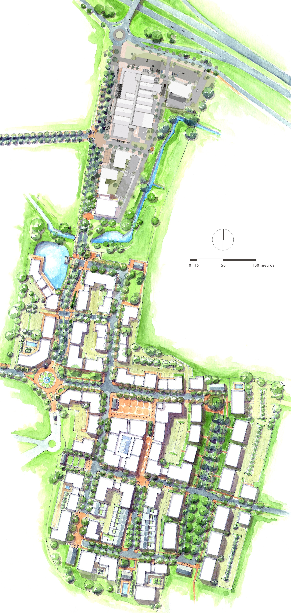
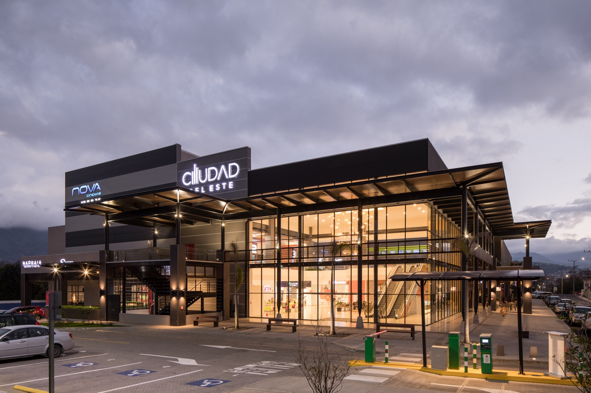
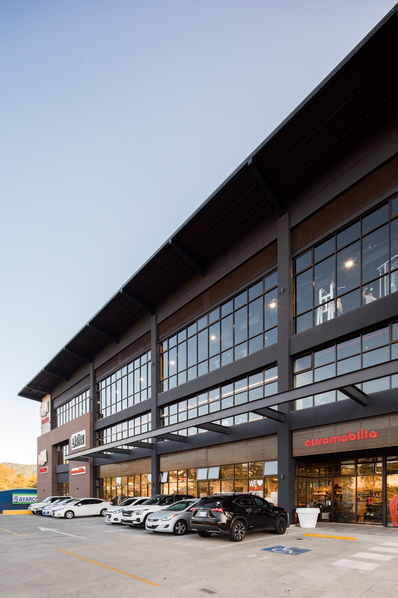
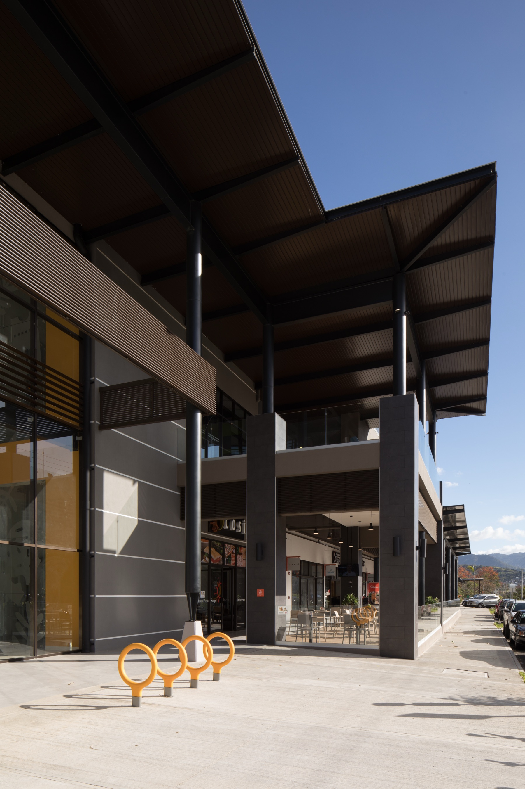
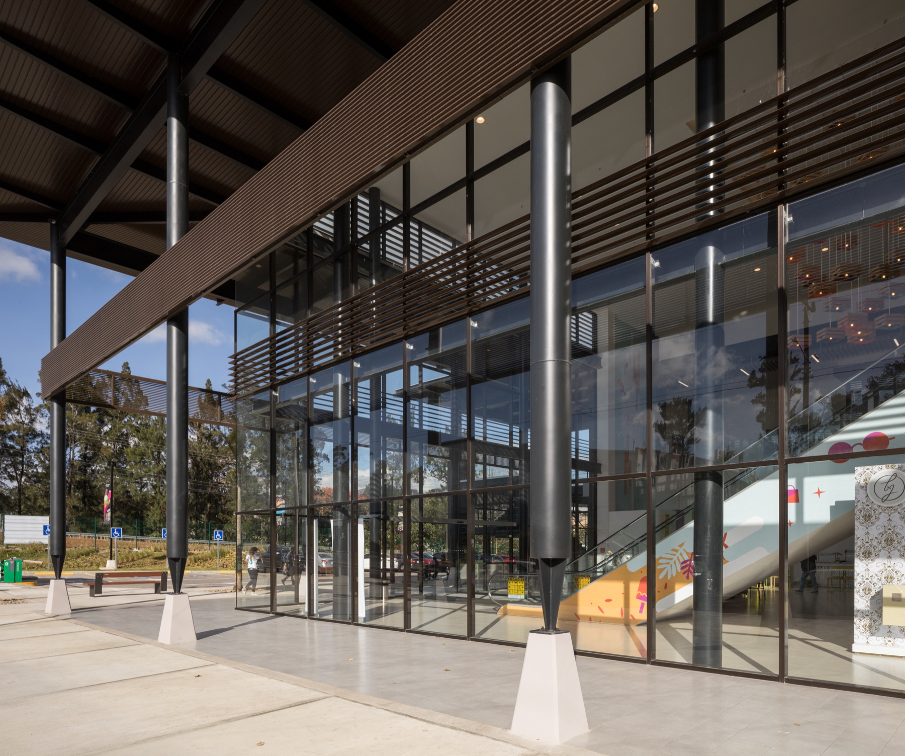
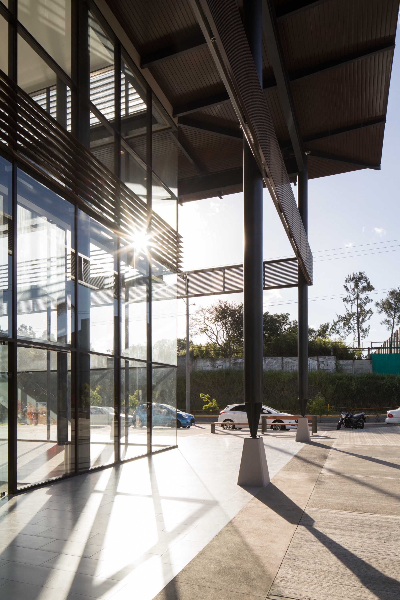
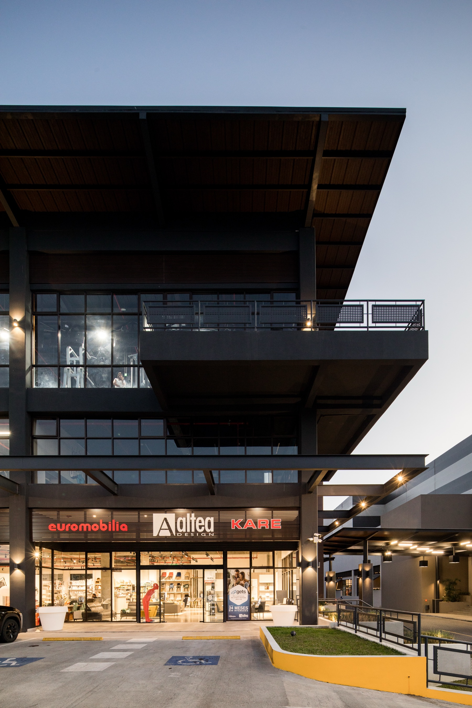
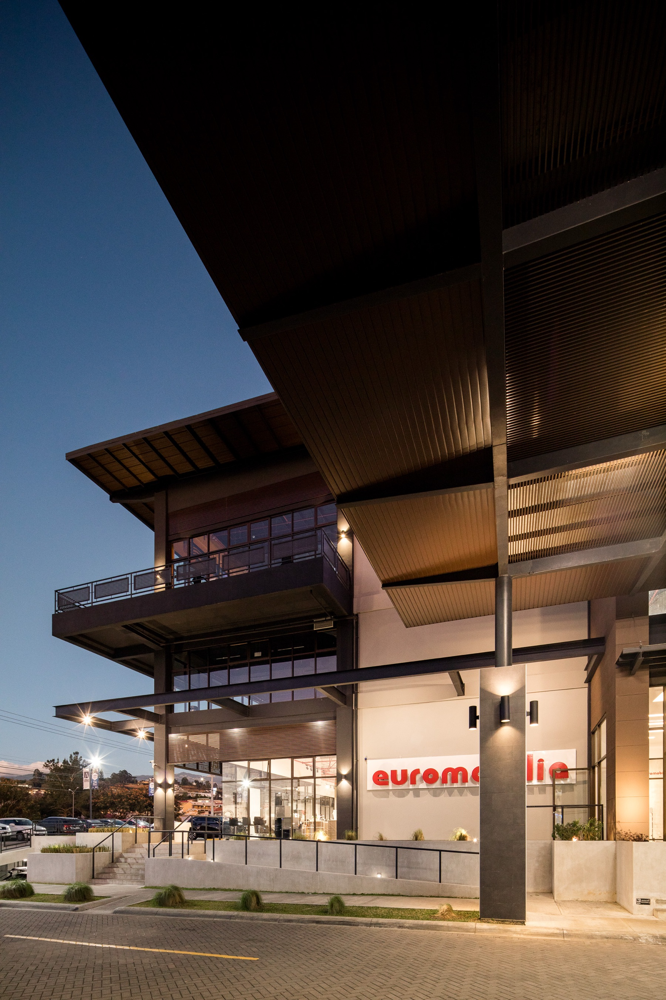

Ciudad del Este
Architecture — Mixed-Use Commercial & Residential. Phases 1–3 complete; Phase 4 in design.
Architecture — Mixed-Use Commercial & Residential. Phases 1–3 complete; Phase 4 in design.

Ciudad del Este is one of the most enduring client relationships in Castillo Arquitectos’ history — a mixed-use development in Curridabat, Costa Rica that has grown across multiple phases into a reference project for the country.


Phase 1 challenged the dominant model of inward-facing, car-oriented commercial architecture, delivering a project that generates active street life and creates genuine public space. Phases 2 and 3 are complete; Phase 4 — currently in design — introduces a residential component, transforming Ciudad del Este into a true mixed-use district.






